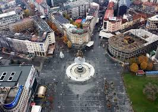

Toggle navigation
Home
Cities
Things to do
Help
About me
Skopje
Places to visit
The Millennium Cross
Canyon "Matka"
Old Bazaar
Fortress "Kale"
Memorial house of Mother Teresa

Macedonia Square
![The Millennium Cross is a 66 metre-high cross situated on the top of the Vodno Mountain in Skopje, Republic of Macedonia. It was constructed to serve as a memorial of 2,000 years of Christianity in Macedonia and the world. The cross was built on the highest point of the Vodno mountain on a place known since the time of the Ottoman Empire as -Krstovar-, meaning -Place of the cross-, as there was a smaller cross situated there. There is an elevator inside the cross as well as a restoraunt next to it.](../img/gradovi/skopje/Krst.jpg)
![Matka is a canyon located west of central Skopje, Macedonia. Covering roughly 5,000 hectares, Matka is one of the most popular outdoor destinations in Macedonia and is home to several medieval monasteries. The Matka Lake within the Matka Canyon is the oldest artificial lake in the country.There are ten caves at Matka Canyon, with the shortest in length being 20 metres and the longest being 176 metres. The canyon also features two vertical pits, both roughly extending 35 metres in depth.Matka Canyon is home to a wide variety of plants and animals, some of which are unique to the area. Roughly 20% of the plant life found at Matka is endemic and only found here. The canyon is also home to 77 indigenous species of butterfly. The canyon's caves are home to large populations of bats.](../img/gradovi/skopje/matka.jpg)

![The Skopje Fortress, commonly referred to as Kale Fortress, or simply Kale, is a historic fortress located in Skopje. It is situated on the highest point in the city overlooking the Vardar River. The fortress is depicted on the coat of arms of Skopje, which in turn is incorporated in the city's flag. The first fortress, according to research and available data, is believed to have been built amidst the 6th century A.D., on land that had been inhabited during the Neolithic and Bronze ages or roughly 4000 B.C. It was constructed with yellow limestone and travertine and along with fragments of Latin inscriptions.](../img/gradovi/skopje/kale.png)
![The desire to pay respect to one the most famous person and Nobel Prize winner from Macedonia was accomplished on the 30-th of January 2009 with the opening of the Memorial house dedicated to Mother Teresa. The Memorial house of Mother Teresa is non profit organization financed by the Government of Republic of Macedonia. The Location of the museum is not randomly chosen. That is to say, on this exact place the old Catholic Church “Sacred heart of Jesus” used to stand. It is where Mother Teresa, then Gonxha Bojaxhiu was baptized just one day after her birth, on the 27th of august 1910, place where she received her first communion and where she find her inner peace after her father’s death.](../img/gradovi/skopje/tereza.jpg)
{kind=link}